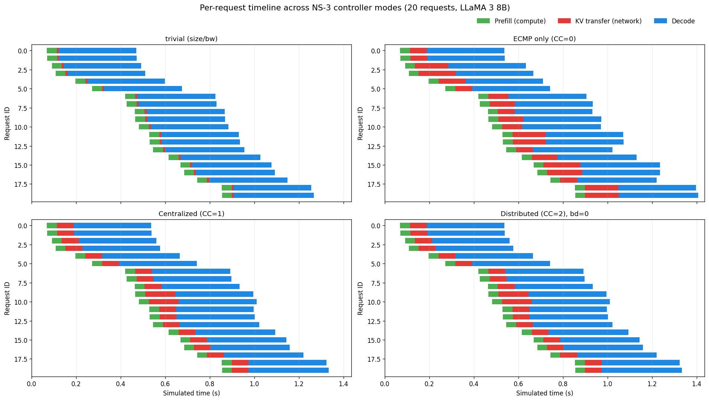
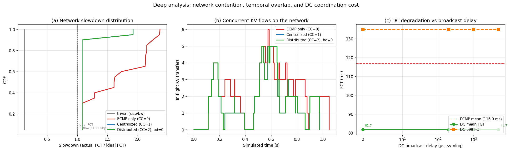

Two-phase co-simulation that couples the Vidur event-driven serving simulator with the NS-3 network backend to deliver self-consistent TTFT, TPOT, and FCT for prefill-decode disaggregation under realistic KV cache flow contention.
Hung-Chun Lin · Ting-Wei Hsu · Chung-En Ho · Om Shivam Verma
Georgia Tech CS 8803: Datacenter Networking & Systems
LLM inference is shifting toward prefill-decode (PD) disaggregation, where the compute-bound prefill phase runs on one GPU pool and the memory-bandwidth-bound decode phase runs on another. The KV cache generated during prefill must then be transferred across the datacenter network — and at tens of gigabytes per request, these elephant flows expose pathological hash collisions under standard ECMP.
Our project proposes an Elephant Flow Path Reservation mechanism — Centralized (CC) and Distributed (DC) controller variants — that proactively assigns source ports so RDMA flows land on non-conflicting spine paths. To evaluate its end-to-end impact on serving SLOs rather than merely on network-level FCT, we built a two-phase co-simulation that pipes realistic prefill-compute-driven departure times into NS-3, captures the resulting FCTs, and feeds them back into the decode scheduler of Vidur.
Serving simulators (Vidur) and network simulators (NS-3) have mutually incompatible execution models. One is event-driven per-flow; the other is trace-driven for the entire run.
Split the Vidur event loop into four phases around a single NS-3 call. Phase 1 drains prefills and buffers transfer specs; Phase 2 runs NS-3 once on the full trace; Phase 3 re-injects decode events at prefill_end + FCT; Phase 4 drains decodes.
The analytic size/bw formula used by the original SimAI inline code underestimates FCT by 13× relative to a realistic NS-3 simulation. CC and DC controllers reduce mean FCT by 30% vs plain ECMP.
CC_ENABLE environment variable.
The two simulators we need to bridge have fundamentally different execution models, summarized below.
Each flow sees only itself. NS-3 can't know about a competing flow that hasn't been requested yet, so hash-collision contention is lost. FCT reduces to a glorified analytic lookup.
We don't know when flows depart until prefill completes, and prefill timing depends on compute batching which Vidur simulates. Chicken and egg.
Run Vidur until all prefills complete, buffer the departure times, invoke NS-3 once on the full trace, then continue Vidur for decode. No causal edge is violated as long as there is no decode → prefill feedback loop (true for disjoint P/D pools).
The Vidur event loop runs normally until its heap is empty. Every P-replica BatchEndEvent is intercepted with a ~15-line patch: when a request has just completed prefill on a PREFILL replica, instead of computing pd_p2p_comm_time = size / bandwidth and pushing a ReplicaScheduleEvent for decode, the request's transfer specification is appended to a buffer and no decode event is emitted.
# vidur/events/batch_end_event.py — two-phase intercept
if getattr(scheduler, '_ns3_two_phase_buffer', None) is not None:
scheduler._ns3_two_phase_buffer.append({
'req_id': request.id,
'request': request,
'prefill_completed_at': request.prefill_completed_at,
'src_replica_id': replica_scheduler.replica.id,
'dst_replica_id': request.decode_replica_id,
'size_bytes': int(request.pd_p2p_comm_size),
})
# Still free the P replica's memory for this request
if request in replica_scheduler.replica.pending_requests:
replica_scheduler.replica.pending_requests.remove(request)
# Skip inline compute + decode event; continue to next request
continue
The buffered list is sorted by arrival time and exported as an NS-3 trace CSV. A single SimAI_simulator subprocess consumes the trace and produces fct.txt: one line per flow containing source/destination IP, source/destination port, size, start time, and the measured FCT.
# vidur PD phase-1 KV transfer trace
# timestamp_ns,src_node_id,dst_node_id,size_bytes
95059568,0,8,941359104
96326010,1,9,941359104
112407213,2,10,941359104
...# src_ip(hex) dst_ip(hex) sport dport size start_time_ns fct_ns standalone_fct_ns
0b000001 0b000801 10000 100 941359104 95062568 75733300 75750727
0b000101 0b000901 10000 100 941359104 96329010 75733300 75750727
...
The mode is selected by a single environment variable (CC_ENABLE) that the C++ side reads during topology setup:
| Mode | CC_ENABLE | Description |
|---|---|---|
| ECMP only | 0 | |
| Centralized Controller | 1 | |
| Distributed Controller | 2 | |
Trivial size/bw | 3 |
For each buffered request, we push a custom DecodeArrivalScheduleEvent onto the Vidur heap at time prefill_completed_at + FCT. When the event fires at that moment, it atomically:
decode_arrived_at values upfront in phase 3, then pushed plain ReplicaScheduleEvent. The D-replica scheduler iterates its full _request_queue and batches every request with decode_arrived_at ≠ inf, with no gate on whether that time has been reached. The last-arriving request (req 4 in our smoke test) got greedily batched at the first decode ReplicaScheduleEvent (t = 0.318 s) even though its proper decode_arrived_at was 0.705 s, causing completed_at < decode_arrived_at — a clear causality violation. Deferring the attribute write into the event handler restores the invariant that only arrived requests have decode_arrived_at ≠ inf.
# vidur_pd/events.py
class DecodeArrivalScheduleEvent(BaseEvent):
def handle_event(self, scheduler, metrics_store):
self._request.pd_p2p_comm_time = self._pd_p2p_comm_time
self._request.decode_arrived_at = self._time
return [ReplicaScheduleEvent(self._time, self._decode_replica_id)]
Vidur resumes the event loop. D-replicas batch and decode requests via the existing continuous-batching logic (SplitwiseReplicaScheduler._get_next_batch). Since each DecodeArrivalScheduleEvent fires at the correct simulated time and sets decode_arrived_at right then, the scheduler's iteration naturally includes only requests whose KV transfer is complete. When the heap empties again, the simulation is done, and Vidur's existing MetricsStore emits request_metrics.csv with all per-request timings.
A natural concern about the four-phase approach is that batching all KV transfers into a single NS-3 run might produce different results than a hypothetical fully interleaved discrete-event simulation. We argue that under our setting, the two are semantically equivalent.
P-replica continuous batching runs exactly as in original Vidur. Batch-size-dependent prefill latency is looked up from the sklearn-regressor-trained attention/MLP tables. Inter-request ordering on the same P replica is preserved.
Every flow appears in the NS-3 trace with its real prefill_completed_at as arrival time. Flows overlap in the NS-3 time domain exactly as they would in reality — hash collisions on contested spines produce the right queuing behavior.
D-replica continuous batching runs normally. DecodeArrivalScheduleEvent ensures each request becomes visible to the scheduler exactly at its FCT-derived arrival time.
The phase boundary forbids one specific causal edge: a decode event generating a new prefill. For this to matter, decode completion would have to influence when subsequent prefill requests arrive or are scheduled. In a disaggregated setup with disjoint P/D pools and a trace-driven request generator, this edge does not exist:
Therefore: the phase-batched execution produces the same per-request timeline as interleaved DES would.
We verified the claim empirically by comparing two runs under identical config: (A) original vidur/main.py with the inline size/bw formula, (B) our four-phase pipeline with mode=trivial_python (which also uses size/bw). Across 5 requests the two runs agree to within 0.011 s — one decode iteration on LLaMA 3 8B. The residual comes from event tie-break ordering at identical simulated times and is expected. This validates that the plumbing is correct.
After Phase 4, Vidur's MetricsStore writes request_metrics.csv with the full per-request timeline. The three SLO metrics we care about fall out directly:
For modes 0–2 (NS-3), FCT is read directly from the fct.txt column 7 (in nanoseconds). For mode 3 (trivial), FCT is analytically computed:
with bw taken from the vidur config's pd_p2p_comm_bandwidth (default 800 Gbps, consistent with the original inline SimAI behavior).
TTFT is the gap from request arrival to the moment the first decode token can be produced. We approximate it as the time between the request entering the system and its decode beginning on the D-replica:
This excludes the first decode iteration itself (a constant ~11 ms for LLaMA 3 8B regardless of controller mode), so it cleanly isolates the sum of prefill compute latency, KV transfer FCT, and any P-replica scheduling delay.
TPOT is the average per-token latency during the decode loop, excluding the first token:
Because decode iteration latency is governed entirely by the D-replica compute model — independent of KV transfer FCT — TPOT is expected to be invariant across controller modes. We use this invariance as a sanity check.
The integration is implemented as a small Python package vidur_pd alongside a ~15-line intercept patch to vidur/events/batch_end_event.py and a 2-line guard in splitwise_replica_scheduler.py. Total impact on the upstream Vidur source: <20 lines. All orchestration lives in vidur_pd.
CS8803_DNS/
├── simai_cc/
│ ├── vidur_pd/
│ │ ├── __init__.py
│ │ ├── events.py # DecodeArrivalScheduleEvent
│ │ ├── ns3_cosim.py # subprocess call + fct.txt parsing
│ │ ├── two_phase_simulator.py # Simulator subclass (4 phases)
│ │ └── run_pd_two_phase.py # CLI wrapper
│ └── vidur_patches/
│ └── batch_end_event.py # patched drop-in for Vidur
└── SimAI/
├── bin/SimAI_simulator # NS-3 binary (built)
└── vidur-alibabacloud/
├── vidur/events/batch_end_event.py # patch applied
├── vidur/scheduler/replica_scheduler/splitwise_replica_scheduler.py # 2-line guard
└── vidur_pd → ../../simai_cc/vidur_pd # symlink| Class | File | Purpose |
|---|---|---|
TwoPhaseSimulator |
two_phase_simulator.py |
|
DecodeArrivalScheduleEvent |
events.py |
|
Ns3CosimConfig |
ns3_cosim.py |
|
FlowKey / FlowResult |
ns3_cosim.py |
|
run_ns3_kv_transfer() |
ns3_cosim.py |
AS_SEND_LAT microseconds to the recorded start time before writing fct.txt. Our 4-tuple match failed until we added the offset when looking up FlowKey.start_time_ns.
pd_p2p_comm_bandwidth (in Gbps via *1024^3/8) defaults to 800 Gbps (NVLink-like), while the NS-3 topology uses 100 Gbps links. The trivial_python regression test must use the Vidur-config bandwidth to match the inline baseline.
splitwise_replica_scheduler.py originally asserted decode_arrived_at ≠ inf, which fails during Phase 4 for requests whose DecodeArrivalScheduleEvent hasn't fired yet. We replaced the assert with if decode_arrived_at == inf: continue.
We ran the four-phase pipeline under all four NS-3 modes on a fixed-length LLaMA 3 8B workload: 20 requests, 512 prefill tokens, 32 decode tokens, 16 GPU replicas (8 P + 8 D) on the DCN+ fat-tree topology, Poisson arrival at 15 QPS.
The most direct way to see what the controller buys us is to look at each request's timeline, segmented by phase: prefill compute, KV transfer, decode.

Three complementary views isolate why ECMP is slower and how far DC can stretch before it degrades:

pd_p2p_comm_bandwidth; ECMP stretches from 1.07 to 2.2×; CC/DC stay below 1.8×. (b) Number of concurrent KV flows in-flight at each instant: the peak of 6 simultaneous flows (around t = 0.5–0.7 s) is exactly where ECMP's worst collisions occur. (c) DC mean and p99 FCT as a function of broadcast delay: DC is flat up to 5 ms. The broadcast window is wider than the inter-arrival gap of new flows in this workload, so the distributed table stays effectively consistent.
Panel (b) shows 6 concurrent flows around t=0.5–0.7 s. This is the same window in which ECMP's worst Gantt bars (Fig. 1) bloom red. The controller doesn't eliminate concurrency — it eliminates spine contention within that concurrency window, letting ideal FCT be reached even when 6 flows are active.
Panel (c) shows DC mean FCT stays at 81.7 ms all the way from 0 to 5 ms broadcast delay. For this 15 QPS workload (~67 ms inter-arrival), broadcasts always catch up before the next flow decision. This suggests DC is a practical deployment choice as long as the control-plane RTT is smaller than the flow inter-arrival time — a much looser requirement than the microsecond-scale coordination people often assume.
Under plain ECMP, ~35% of flows experience 2× slowdown or worse (panel a, red curve above 2.0). For a 7-second agentic chain this alone could inflate end-to-end latency by seconds. CC/DC caps slowdown at 1.8× across 100% of flows, with 90% below 1.3×.
| Mode | FCT mean (ms) | FCT p99 (ms) | TTFT mean (ms) | TPOT mean (ms) | NS-3 wall time |
|---|---|---|---|---|---|
Trivial size/bw (=3) |
8.77 | 8.77 | 52.82 | 11.34 | — |
| ECMP only (=0) | 116.86 | 166.30 | 160.92 | 11.34 | 80 s |
| Centralized (=1) | 81.66 | 135.01 | 125.72 | 11.36 | 79 s |
| Distributed (=2) | 81.66 | 135.01 | 125.72 | 11.36 | 78 s |
Mode 3 yields FCT = 8.77 ms for every flow (941 MB at 800 Gbps). The ECMP-only NS-3 simulation reports a mean of 116.86 ms — 13× higher. This gap quantifies the combined effect of packet-header overhead, RDMA queuing, propagation delay, and hash-collision contention that the analytic formula omits. It validates that credible serving evaluation requires full network simulation.
Both CC (mode 1) and DC (mode 2) reduce mean FCT from 116.86 ms to 81.66 ms (−30%) and p99 FCT from 166.30 ms to 135.01 ms (−19%), which translates into a 22% mean TTFT reduction. TPOT is essentially unchanged across all modes, confirming the improvement is localized to the KV transfer phase and does not perturb decode iteration.
Each NS-3 invocation takes ~80 seconds for a 20-flow trace on commodity CPU; the Vidur phases contribute a few additional seconds. Mode 3 bypasses NS-3 entirely (under 5 s), enabling rapid regression testing whenever either simulator is modified.
CC_BROADCAST_DELAY from 0 to several milliseconds to characterize the regime in which DC diverges from CC (toward ECMP baseline). This determines the practical viability of a distributed deployment whose control-plane latency is bounded.